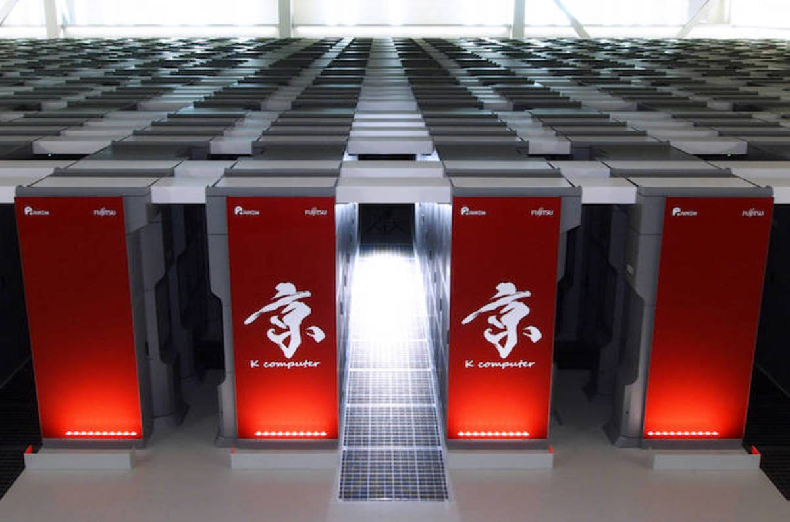

DomashkaPoElectivu

- Работы Дж. Фон Неймана по теории вычислительных машин
- История создания и развития ЭВМ. Поколения
- Микропроцессоры, история создания, миспользование в современном мире
- Cупер-ЭВМ назначение, возможности, принципы построения
- Проект 5-го поколения: замысел и реальность
- Основные правила компьютерной безопасности
Проект 5-го поколения
Компьютеры пя́того поколения — правительственная программа в Японии по развитию компьютерной индустрии и искусственного интеллекта, предпринятая в 1980-е годы. Целью этой программы было создание «эпохального компьютера» с производительностью суперкомпьютера и мощными функциями искусственного интеллекта. Разработки начались в 1982 г. и закончились в 1992. Их стоимость порядка 500 млн $. Согласно замыслу разработчиков, элементной базой компьютеров рассматриваемого периода должны были стать устройства, созданные на основе сверхбольших интегральных схем с компонентами искусственного интеллекта. Это позволило бы избежать необходимости писать программы для ЭВМ. Разработчики стремились к тому, чтобы компьютер выполнял функции по объяснению человека.
Параллельно с японскими инженерами работали ученые из США, Великобритании и ряда европейских стран, в том числе СССР. Устройства, разрабатываемые в этих государствах, были ориентированы на параллельную обработку информации. Тем не менее проекты нельзя отнести к пятому поколению компьютеров, потому что речь не шла об интеграции множества процессоров.
Исследовательская работа Компьютеры пятого поколения Возникновение проекта.К моменту начала проекта Япония еще не являлась лидером в области компьютерных технологий, хотя уже достигла большого успеха в реализации компьютеров и приборов, беря за основу американские или английские разработки. Этот термин должен был подчеркнуть, что Япония планирует совершить новый качественный скачок в развитии вычислительной техники.
Первым поколением считались ламповые компьютеры, вторым — транзисторные, третьим — компьютеры на интегральных схемах, а четвёртым — с использованием микропроцессоров.
В 1988 проект был успешно завершён, но не был востребован и не получил продолжения по причине перестройки и невыгодной для отечественной компьютерной индустрии рыночной ситуации.
Оценка проектаС любых точек зрения проект можно считать абсолютным провалом. За десять лет на разработки было истрачено более 50 млрд ¥, и программа завершилась, не достигнув цели. Рабочие станции так и не вышли на рынок, потому что однопроцессорные системы других фирм превосходили их по параметрам, программные системы так и не заработали, появление Интернета сделало все идеи проекта безнадёжно устаревшими.
На каких элементах построены, устройство, структурная схема
Поскольку понятие «ЭВМ пятого поколения» размытое и неопределенное, сложно говорить о его строении.
Разработчики видят перспективы в идее создания оптических компьютеров. Она заключается в том, чтобы использовать для вычислений фотоны, генерируемые лазерами и диодами. По сравнению с электронами, фотоны достигают более высоких скоростей.
Мысли о создании фотонного устройства стали реальны в 1976 году, когда ученые США провели опыт с оптической метастабильностью. Выяснилось, что для подобного рода приборов необходим полупроводник с двусторонним спектром – прозрачным и непрозрачным. Кроме того, материал должен обладать резко нелинейной оптической характеристикой. Эти особенности позволяют увеличить скорость микросхем до триллиона операций в секунду.
Чем обусловлено появление
Главной задачей при создании компьютеров будущего являлось создание искусственного интеллекта. Однако японский проект не оправдал себя. Несмотря на это, разработки ученых стали основой современных гаджетов:
- ЭВМ нынешнего поколения распознают рукописный и печатный текст, голос человека.
- Фильтрация нежелательных сообщений и другие задачи классификации выполняются с помощью нейронных сетей и экспертных систем.
- В инвестиционной деятельности широко применяются генетические алгоритмы.
- Робототехника является неотъемлемой частью современной жизни и используется повсеместно – на заводах и в быту.
- Пароли из символов для обеспечения информационной безопасности уступают место биометрическим данным.
Достоинства и недостатки
К плюсам ЭВМ пятого поколения следует отнести следующие характеристики:
- интеллектуальность, позволяющая устранить барьер между пользователем и устройством;
- высокая производительность;
- небольшие размеры;
- доступность;
- объем памяти в сотни мегабайт.